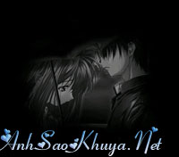

|
Sự hiểu lầm có thể làm cho con người ta mất đi vĩnh viễn 1 thứ gì đó mà ta rất yêu quý, để rồi, khi nhận ra thì đã quá muộn... Có một chàng trai đã gấp 1.000 con hạc giấy tặng người anh yêu. Mặc dù lúc đó anh chỉ là một nhân viên quèn trong công ty, tương lai chẳng có vẻ gì sáng lạn nhưng họ vẫn luôn rất hạnh phúc bên nhau. Rồi cho đến một hôm người yêu của anh nói rằng nàng sẽ đi Paris, sẽ không bao giờ còn có dịp gặp lại anh nữa. Nàng rất lấy làm tiếc về điều này và an ủi chàng rằng rồi nỗi đau của chàng cũng sẽ trở thành dĩ vãng. Hãy để cho nó ngủ yên trong ký ức của mỗi người. Chàng trai đồng ý nhưng trái tim tan nát. Anh lao vào làm việc quên cả ngày đêm, cuối cùng anh đã thành lập được công ty của riêng mình. Nó không chỉ giúp anh vươn đến những điều mà trước đây vì thiếu nó mà ngưới yêu đã rời bỏ anh, nó còn giúp anh xua đuổi khỏi tâm trí mình một điều gì đó của những tháng ngày xưa cũ. Một ngày mưa tầm tã, trong lúc lái xe, chàng trai tình cờ trông thấy một đôi vợ chồng già cùng che chung một chiếc ô đi trên hè phố. Chiếc ô không đủ sức che cho họ giữa trời mưa gió. Chàng trai nhận ngay ra đó là cha mẹ của cô gái ngày xưa. Tình cảm trước đây anh dành cho họ dường như sống lại. Anh chạy xe cạnh đôi vợ chồng già với mong muốn họ nhận ra anh. Anh muốn họ thấy rằng anh bây giờ không còn như xưa, rằng anh bây giờ đã có thể tự mình tạo dựng một công ty riêng, đã có thể ngồi trong một chiếc xe hơi sang trọng. Vâng, chính anh, chính người mà trước đây con gái họ chối từ đã làm được điều đó. Đôi vợ chồng già cứ lầm lũi bước chậm rãi về phía nghĩa trang. Vội vàng, anh bước ra khỏi xe và đuổi theo họ. Và anh đã gặp lại người yêu xưa của mình, vẫn với nụ cười dịu dàng, đằm thắm nàng từng đem đến cho anh, đang dịu dàng nhìn anh từ bức chân dung trên bia mộ. Cạnh cô là món quà của anh, những con hạc giấy ngày nào. Đến lúc này anh mới biết một sự thật: nàng đã không hề đi Paris. Nàng đã mắc phải căn bệnh ung thư và không thể qua khỏi. Nàng đã luôn tin rằng một ngày nào đó anh sẽ làm được nhiều việc, anh sẽ còn tiến rất xa trên bước đường công danh. Và nàng không muốn là vật cản bước chân anh đến tương lai của mình. Nàng mong ước cha mẹ sẽ đặt những con hạc giấy lên mộ nàng, để một ngày nào đó khi số phận đưa anh đến gặp nàng một lần nữa, anh có thể đem chúng về bầu bạn. Chàng trai bật khóc. Chúng ta cũng vậy, như chàng trai kia, cũng chỉ nhận ra giá trị lớn lao về sự có mặt của một người mà cuộc đời đã ban tặng cho cuộc sống của chúng ta khi một sáng mai thức giấc, người ấy đã không còn ở bên ta nữa. Có thể họ đã chẳng yêu bạn như cách mà bạn mong đợi ở họ nhưng điều này không có nghĩa rằng họ không dâng hiến tình yêu của họ cho bạn bằng tất cả những gì họ có. Một khi bạn đã yêu, bạn sẽ mãi mãi yêu. Những gì trong tâm trí bạn có thể sẽ ra đi, nhưng những gì trong tim bạn thì mãi mãi ở lại. Nguồn: ASK sưu tầm || Tham gia bình luận TẠI ĐÂY ||
Bạn vô tình đọc ở đâu đó một câu chuyện tình cảm động hoặc một câu chuyện do chính bạn viết ra. Hãy đến với chúng tôi để cùng nhau chia sẻ: wWw.anhsaokhuya.net
Chung tay vì một thế giới online lành mạnh !
|